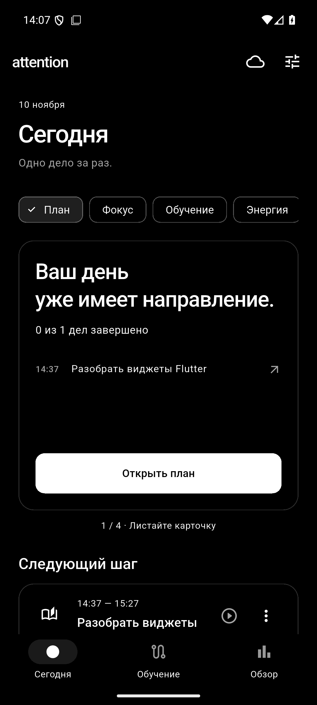
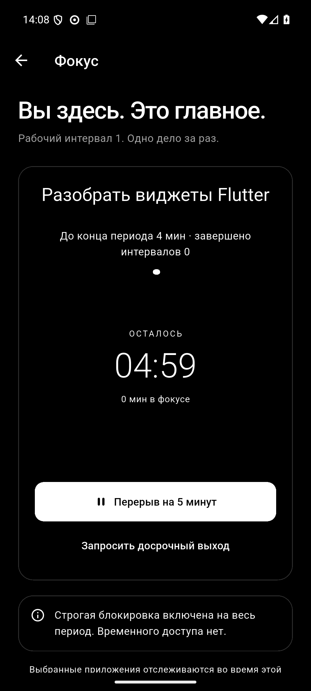
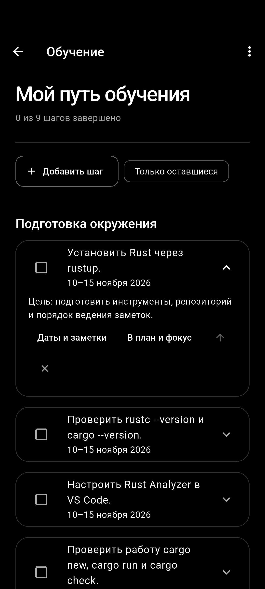
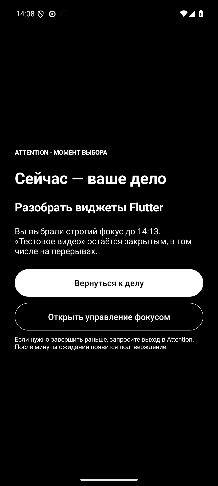

ВРЕМЯ НА ВАШЕЙ СТОРОНЕ
Ваше внимание.
Ваши правила.
Меньше случайных открытий.
Больше того, что вы решили сделать.
Android 8+ · Версия 1.7.1

Не успевать всё.
Успевать своё.
План → Фокус → Результат01 / ОТ НАМЕРЕНИЯ К ДЕЙСТВИЮ
День начинается
с одного решения.


02 / ПРОСТРАНСТВО БЕЗ ЛЕНТЫ
Пауза между
импульсом
и действием.
Вы уже выбрали, чему посвятить это время.
Attention поможет вспомнить об этом.
Обычный фокус
Временный доступ к приложению — с причиной, ограничением по времени и подтверждением.
Строгий фокус
Без временного доступа, даже на перерыве. Досрочный выход — отдельный запрос, минута ожидания и подтверждение.
Режим выбираете вы. Телефон и системные настройки остаются доступны. Фоновое аудио зависит от приложения.

От «хочу изучить»
к первому проекту.
Пример учебного пути
03 / УЧИТЬСЯ В СВОЁМ ТЕМПЕ
Большая цель.
Понятный
следующий шаг.
В Android можно собрать роадмапу вручную, импортировать Markdown из Obsidian или выбрать Markdown, CSV либо ZIP из экспорта Notion.
Проверьте шаги, даты и заметки перед сохранением. У каждого шага могут быть дата начала, срок и длительность. Любой шаг можно перенести в план дня.
Попробовать рабочее пространство ↗Для дел, которым
нужен большой экран.
Планируйте и редактируйте учебные пути в веб-версии. Общий аккаунт по email и облачное хранение подключаются через Supabase.
Перейти в веб-версию ↗Синхронизация пока не включена. Между Android и браузером можно вручную переносить резервную копию.
БЕЗ ЛИШНИХ ОБЕЩАНИЙ
Перед началом.
Что нужно для блокировки приложений?
Выберите приложения в Attention и разрешите службу специальных возможностей Android. Служба распознаёт открытое приложение, но не читает сообщения или содержимое экранов. Ограничение добровольное: разрешение можно отозвать в Android.
Где хранятся мои данные?
В Android планы и история хранятся на устройстве. Демонстрационный режим сайта хранит данные только в текущем браузере. После настройки облачного аккаунта данные веб-версии будут храниться в вашем аккаунте Supabase; вход и синхронизация пока не подключены.
Как импортировать роадмапу в Android?
В «Обучении» выберите Markdown-файл Obsidian или экспорт Notion в формате Markdown & CSV. Из ZIP можно выбрать отдельную заметку или таблицу. Проверьте даты в предпросмотре и подтвердите импорт. Шаги без дат в исходнике останутся без дат.
Будет ли приложение для iPhone?
iOS — в планах. Сейчас доступна Android-версия. Дату выпуска для iPhone пока не объявляем.
Как установить APK и сохранить историю?
Скачайте файл, откройте его на Android и разрешите установку из выбранного источника. При обновлении устанавливайте поверх прежней версии, не удаляя приложение. Перед обновлением можно сохранить резервную копию в настройках.
НАЧНИТЕ С ОДНОГО ДЕЛА
Верните внимание
тому, что важно вам.
Android 8+ · APK · 61,9 МБ · версия 1.7.1
Поддержка автора
Если Attention помогает вам, вы можете поддержать его разработку.
50% от каждого доната будет направлено на благотворительность. Подтверждения переводов в Telegram
Донат в TON
Адрес кошелька в сети TON
UQBvz23EyyCl47BlaAxCByTgdRrzOux1VZtJID7NhV0Yz3xN